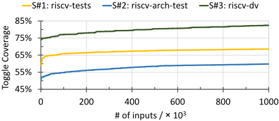
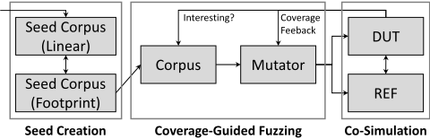
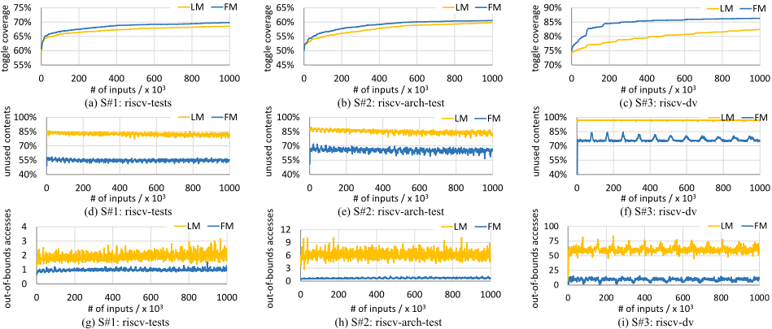

PathFuzz：利用 footprint memory 拓宽 CPU 的模糊测试边界
论文针对覆盖率引导模糊测试（CGF）在 CPU 功能验证中探索能力不足的问题，指出根源在于种子语料来源受限与变异效率低下：传统 linear memory 输入格式与 CPU 动态执行不对齐，造成大量从未被访问的无效字节（underutilization）与越界访问只能填随机值（overutilization）。作者提出 PathFuzz 框架，以 footprint memory 按 CPU 执行时序记录首次访问的内存内容，直接对执行路径做变异，并基于 LibAFL 与 RISC-V DiffTest 协同仿真框架构建开源平台，借助 RISC-V architectural checkpoint 首次将 SPEC CPU2006 等真实大规模程序引入种子库。在 Rocket CPU 上的实验显示，FM 达到同等覆盖率的加速最高 11.90×，SPEC 种子使最终覆盖率达 95.3%，并新发现 4 个长期未检出的功能 bug。对团队而言，其覆盖反馈驱动的自动化测试生成与 golden REF 协同仿真思路可借鉴到 IP 验证，但 footprint 机制与 CPU ISA 执行语义强耦合，无直接可复用组件。
CGF 应用于 CPU 功能验证时探索能力有限：种子语料仅来自手工定向测试、ISG（如 riscv-dv）与形式工具，真实世界大规模程序因地址空间大、执行时间长而无法作为种子；同时传统 linear memory 输入格式按地址组织内容，与 CPU 动态执行不对齐，导致输入字节大量闲置、越界内存访问无法被覆盖率引导变异覆盖，最终覆盖率提升有限（S#1-S#3 仅提升 12.6%、15.7%、9.9%），状态探索被种子语料主导。
提出 PathFuzz 框架：（1）footprint memory 输入格式——按 CPU 执行时序记录每个唯一地址首次被访问的字节并拼接为序列，变异直接作用于执行路径，生成时过滤无用内容、执行时按需解释地址-数据对应关系，缓解 underutilization 与 overutilization；（2）基于 LibAFL 与 DiffTest 构建，设计标准化覆盖率收集接口（RTL 硬件插桩、C++ 模型软件插桩、golden REF 覆盖反馈三类），并提出 DUT 与 REF 间按需内存同步（copy-on-demand）机制以兼容 footprint 语义；（3）利用 RISC-V architectural checkpoint 从真实大规模程序中截取程序片段并转为 footprint 作为种子，种子以 linear 格式存储、以 footprint 格式使用。
FM 相比 LM 的覆盖率提升：S#1-S#3 分别为 13.8%、16.5%、12.7%，为 LM 的 1.10×、1.05×、1.28×
达到与 LM 相同覆盖率的加速比：2.79×、1.96×、11.90×
以 S#3 为例，FM 将无效变异输入字节比例从 96.8% 降至 76.3%，每输入越界内存请求从平均 60.3 次降至 9.3 次
使用 SPEC CPU2006 种子（S#5/S#6）最终覆盖率达 93.1% 与 95.3%，超过先前形式辅助 fuzzer 难以达到的 90% 标准
新发现 4 个长期存在的 bug（Rocket 3 个、Spike 1 个），分别自 2017 年 3 月、2021 年 12 月、2021 年 12 月、2014 年 12 月即存在且未被先前 fuzzing 研究检出，最好情况 15 分钟内检出
在 NutShell 与 XiangShan CPU 上另发现数十个 unique issue（正与 vendor 确认中）
种子选择效应：S#6 以少于 9000 个变异输入在 12.5 分钟内达到 S#5 需 14 小时才达到的 93.1% 覆盖率，加速 67×
与已有 CPU fuzzer 主要优化模糊测试算法（变异策略、调度、形式辅助、指令模板）不同，PathFuzz 从基础设施层面重新设计输入格式：以 footprint memory 取代按地址组织的 linear memory，首次支持真实世界大规模程序作为 CGF 种子。相比同样针对执行路径的 instruction morpher 与 translation buffer 工作，footprint 格式是通用的，覆盖包括 PTE 在内的所有 CPU 内存足迹而非仅指令流，因此能检出依赖页表项的 B#1 类 bug。
相关度级别：medium
命中能力域：2.4 设计验证方法学 | 2.7 EDA/验证自动化与 AI 辅助
理由：论文核心是覆盖率反馈驱动的自动化测试生成与 golden 模型协同仿真，属于验证方法学与验证自动化范畴，与团队 2.4（覆盖率驱动验证、回归与 bug 发现）和 2.7（可复用开源验证框架）相关。其'输入格式与 DUT 动态行为对齐''从真实 workload 提取种子''DUT-REF 按需同步'等思路对 LPDDR/UCIe 等 IP 的协议激励生成与参考模型比对有方法学借鉴价值。但论文技术栈完全面向 CPU ISA 级验证（RISC-V、Spike、DiffTest、toggle coverage），footprint memory 与指令执行/内存访问语义强绑定，团队验证对象是内存/互连 IP 而非处理器，无直接可复用组件，故评为 medium 而非 high。
建议动作：作为方法参考存档
处理器芯片全国重点实验室 中国科学院计算技术研究所 中国北京 xuyinan@ict.ac.cn
处理器芯片全国重点实验室 中国科学院计算技术研究所 中国北京 wangsa@ict.ac.cn
处理器芯片全国重点实验室 中国科学院计算技术研究所 中国北京 snh@ict.ac.cn
北京开源芯片研究院 中国北京 tangdan@bosc.ac.cn
处理器芯片全国重点实验室 中国科学院计算技术研究所 中国北京 baoyg@ict.ac.cn
在后摩尔定律时代，敏捷硬件设计受到了广泛关注，并支撑了多款 CPU 芯片的设计与流片。尽管新兴的设计工具加快了设计进程并使更复杂的设计成为可能，验证仍然是最耗时、最耗费人力的环节。为了量化验证进度，定量覆盖率指标被普遍采用，用于裁剪验证空间，并作为流片前验证完备性的衡量指标 [10, 15]。
近年来，覆盖率引导的变异模糊测试（CGF）已成为一种流行的测试生成方法，能够有效提升验证覆盖率 [3, 9, 14]。硬件模糊测试工具复用软件模糊测试工具，并遵循基于遗传算法的类似工作流程。通过在覆盖率引导下对语料库进行变异，CGF 有潜力发现 CPU 中尚未暴露的功能缺陷 [6-8]。
尽管 CGF 因其基于变异的利用能力而颇具前景，但其在 CPU 功能验证中的探索能力却较为有限。由于指令集架构（ISA）具有复杂的语法和语义定义，CPU 需要经过精心构造的指令序列才能到达特定的特权状态。然而，通用模糊测试工具缺乏此类领域特定信息，因而在有效的状态探索方面有所不足 [2, 4, 18]。
CGF 的探索能力受两个主要因素影响，即种子语料库和变异操作。前者对应模糊测试的起点，后者则通过持续创建和调度变异后的输入，决定模糊测试工具能够达到的范围。先前工作提出了克服上述局限的技术，例如场景驱动的指令模板 [18]、语法与语义感知的变异 [7]，以及基于距离的调度策略 [3]。
我们认可这些工作在为 CPU 模糊测试引入领域特定知识方面的贡献，但本文聚焦于一条解决探索问题的正交路径，即如何设计 CPU 模糊测试工具（在模糊测试算法之外），以扩展种子语料库的来源并实现更高效的变异。这类基础性优化不仅会使先前的模糊测试工具受益，还将拓宽 CPU CGF 未来的研究范围。
覆盖率指标已被广泛用于量化硬件验证的完备性。近年来，覆盖率引导的模糊测试已成为一种流行的方法，用于自动生成测试输入，以达成更高的验证覆盖可达范围。然而，我们观察到，其在 CPU 上的有效性受到种子语料库来源有限以及变异效率的制约。为拓宽模糊测试的视野，本文提出了 PathFuzz 框架，该框架融合了一种面向 CPU 模糊测试的高效输入格式——足迹存储器（footprint memory），以及来自真实世界大规模程序的种子语料库。实验表明，使用 PathFuzz 可达到超过 95% 的验证覆盖率，并在两个知名开源 CPU 设计中新识别出四个长期存在的缺陷。
模糊测试；硬件验证；测试生成
Yinan Xu、Sa Wang、Dan Tang、Ninghui Sun、Yungang Bao。2024。PathFuzz: Broadening Fuzzing Horizons with Footprint Memory for CPUs。载于第 61 届 ACM/IEEE 设计自动化会议（DAC '24），2024 年 6 月 23-27 日，美国加利福尼亚州旧金山。ACM，美国纽约州纽约市，6 页。https: //doi.org/10.1145/3649329.3655911
∗ 同时就职于中国科学院大学。
允许免费制作本作品的部分或全部数字或硬拷贝供个人或课堂使用，前提是这些拷贝不得为营利或商业利益而制作或分发，且拷贝须在首页带有本声明及完整的引用信息。本作品中第三方组件的版权必须予以尊重。对于所有其他用途，请联系所有者/作者。
© 2024 版权归所有者/作者所有。
ACM ISBN 979-8-4007-0601-1/24/06
我们发现的一个根本性障碍是针对中央处理器（CPU）进行模糊测试所用的输入格式。现有的 CPU 模糊测试器以指令序列或存储器映像作为输入，并将其解释为一种线性存储器，其内容按地址顺序组织。然而，这种格式与 CPU 执行过程不相吻合，因而同时限制了种子语料库的来源和变异效率。首先，输入内容中可能存在无用的空洞，这些空洞在 CPU 执行期间从未被触及，却会增大语料库规模并消耗变异空间。其次，
覆盖引导模糊测试（CGF）是一种持续创建测试以识别被测设计（DUT）中漏洞的自动化过程。随着其在软件社区的日益普及，近年来研究人员已深入挖掘了其应用于 CPU 的潜力。
针对 CPU 的 CGF 工作流程如下：给定种子语料库后，模糊测试器基于覆盖反馈持续对语料库进行变异，并将变异后的输入发送给 DUT 执行。在执行期间，DUT 的行为会与黄金参考模型（REF）的行为进行比对。如果某个变异输入导致行为不一致，则可能检测到一个缺陷。否则，将根据该输入是否命中未覆盖的覆盖点，决定将其加入语料库以供下一轮模糊测试迭代使用，还是将其丢弃。
现有关于 CPU CGF 的研究大多借助模糊测试算法的利用能力，以检测安全漏洞为主要目的。给定起点（种子语料库）

和搜索方向（覆盖引导），模糊测试器便会自动地利用状态空间（施加变异）并搜索易受攻击的目标。面向安全的 CGF 颇具前景，因为它能够基于精细调优的种子生成 [8, 18]、覆盖引导 [7, 8, 14]、变异 [2] 以及调度策略 [6] 来命中意外状态。
在本文中，我们将重点转向 CGF 的另一项关键应用：CPU 功能验证。该任务需要对 CPU 的各项功能进行全面而深入的检查，以验证其正确性。因此，除了在识别缺陷方面颇具前景的利用能力之外，我们还关注 CPU CGF 的探索能力，并以模糊测试期间的覆盖增长作为其量化指标。
图 1 展示了在约 10 小时、共一百万个变异输入的模糊测试过程中 CPU 的覆盖率曲线。三个种子语料库来源 S#1-S#3 分别提供了 56.0%、44.2% 和 72.6% 的基线覆盖率。然而，覆盖增长（即最终覆盖到达范围与基线覆盖率之差）分别仅为 12.6%、15.7% 和 9.9%。这一有限的覆盖增长表明当前 CPU CGF 工作流程的探索能力有限：覆盖引导的变异确实能够利用到一些新状态，但状态探索似乎主要由种子语料库主导。
我们观察到，尽管线性存储器对于 CPU 而言简单且具有普遍适用性，但地址与数据之间的对应关系会导致利用不足与过度利用。当部分输入未被使用时，便会产生利用不足，导致种子语料库庞大并阻碍变异效率。相反，当 CPU 试图访问输入中不存在的地址时，便会出现过度利用；在这种情况下，以往的模糊测试器只能注入随机值 [7]，而无法利用覆盖率引导的变异。
利用不足与过度利用给模糊测试过程的优化带来了重大挑战，凸显了在 CPU 模糊测试中高效利用输入数据的必要性。因此，本文提出了一种新颖的 CPU 模糊测试器 PathFuzz，其输入格式为足迹存储器，该格式避免了地址与数据之间的静态对应关系，并在 CPU 执行期间动态地解释输入字节。
PathFuzz 致力于借助足迹存储器对 CPU 执行路径进行模糊测试，并在种子与变异两方面拓展了更广阔的视野。图 2 概述了 PathFuzz 的工作流程，其中包含三个主要阶段：种子语料库生成、覆盖率引导的模糊测试以及协同仿真。
回顾以推进基础设施来拓宽 CPU 模糊测试范围的动机，我们在设计 PathFuzz 框架时设定了两个主要目标。第一，它采用新颖的足迹存储器（第 3.1 节），凭借更丰富的种子以及与变异之间更好的格式亲和性，实现对 CPU 执行路径更高效的探索。第二，在引入这一新输入格式的同时，它基于最先进的模块化软件模糊测试器 LibAFL [5] 与 RISC-V CPU 协同仿真框架 DiffTest [19] 构建。这些开源且可复用的工具将推动 PathFuzz 成为未来 CPU 覆盖率引导的模糊测试（CGF）研究的共享、可扩展平台（第 3.2 节）。

基于 PathFuzz，我们展示了如何进一步利用 RISC-V 架构检查点 [19]，从真实世界的大规模程序中获取 CGF 种子（第 3.3 节）。
线性内存（linear memory）为现有 CPU 模糊测试器（fuzzer）所广泛使用，其字节在单一连续地址空间内编址，并由 CPU 通过地址进行访问。为缓解利用不足与过度利用问题，我们提出了足迹内存（footprint memory），其中的字节按照 CPU 执行与内存访问的时间先后顺序排列。
我们通过从线性内存进行转换的过程来解释足迹内存的定义。给定线性输入作为 CPU 内存的初始映像，CPU 通常从内存中取指并执行指令。这些指令还可能通过显式的 load/store 操作或隐式的快表（TLB）访问来访问内存。在仿真过程中，对于每个唯一地址，首次被访问的字节会按时间顺序被记录下来。此后，这些有序字节被拼接起来，从而得到转换后的足迹内存。因此，足迹格式无非就是与 CPU 执行路径对齐的 CPU 内存足迹。
反之，将足迹输入用于 CPU 执行就变得十分直接。当某个地址首次被访问且请求大小为 𝑁 时，我们从足迹内存中读取 𝑁 个字节，并将其作为响应数据返回。
总体而言，将足迹内存用于 CGF 的核心洞察在于：直接通过 CPU 内存足迹而非整个内存映像来对 CPU 执行路径进行模糊测试。它通过在生成时剔除无用部分、并在 CPU 执行期间动态解释内容，缓解了利用不足与过度利用问题。
尽管足迹内存在模糊测试 CPU 执行路径方面颇具前景，但要将其用于 CPU 模糊测试，还需要对现有的 CGF 工作流程进行一些适配。
首先，种子语料库可能在持续的模糊测试过程中不断积累，并被多个设计上的各种模糊测试迭代所复用。然而，对足迹种子的解释依赖于特定的 CPU 行为。因此，为了使测试输入保持一致的语义含义，PathFuzz 在每次模糊测试迭代前后均设有一个格式转换阶段。种子以线性格式存储，而由 CGF 以足迹格式使用。
其次，为了将 CPU 设计集成到软件模糊测试器中，PathFuzz 在 RTL 仿真与模糊测试器之间设计了标准化的覆盖率收集接口，支持三种类型的 CPU 覆盖率指标。与先前工作类似，PathFuzz 接受：1）用于收集结构覆盖率与功能覆盖率的硬件插桩；2）在仿真器生成的 C++ 模型上进行的软件插桩；以及 3）来自黄金 REF 的覆盖率反馈，后者是衡量已覆盖多少 ISA 级行为的良好指标。

第三，先前的协同仿真方法学与足迹内存不兼容。例如，DiffTest 在复位时将 DUT 的内存映像复制到 REF，以确保二者接收相同的输入，并在任意内存地址上拥有相同的内存内容。然而，足迹内存的语义含义取决于 DUT 的微架构行为，也就是说，输入字节与地址之间的对应关系只能在 CPU 执行期间确定。因此，PathFuzz 提出了一种 DUT 与 REF 之间的按需内存同步机制。由于 REF 不会推测执行任何指令，且其执行总是落后于 DUT，PathFuzz 将内存复制从初始化阶段推迟到输入字节首次被 DUT 访问之时。这种按需复制（copy-on-demand）机制还通过避免将未被访问的输入复制到 REF，带来了小幅的性能提升。
为了丰富覆盖率引导的模糊测试（CGF）语料库，PathFuzz 在 CPU 执行期间选取任意程序阶段，并捕获内存足迹作为与执行路径相对应的种子。
由于时间和空间上的限制，在 CGF 中将真实世界的大规模程序纳入种子颇具挑战性。首先，这类程序通常执行时间很长，这与实现有效覆盖率反馈和变异所需的快速迭代周期相冲突。此外，这些程序所占用的大量线性内存空间会削弱 CGF 的有效性和效率。
PathFuzz 提出利用 RISC-V 架构检查点 [19] 并结合足迹内存来克服时间和空间上的限制。检查点是程序状态在特定时刻的快照，使程序执行能够从这些确切位置即时恢复。随后，这些线性检查点被转换为足迹内存，从而缩小其体积以便用作种子。
| Feature | Configuration |
|---|---|
| DUT, REF Target Coverage | Rocket, Spike toggle S#1: riscv-tests, 140 (LM, FM) S#2: riscv-arch-test, 257 (LM, FM) |
| Seed Corpus, #Cases | S#3: riscv-dv, 1150 (LM, FM) S#4: force-riscv, 969 (FM) S#5: SPEC CPU2006, 55 (FM) S#6: SPEC CPU2006, 1090 (FM) |
| Feature | Configuration |
在本节中，我们对所提出的 PathFuzz CPU 模糊测试器进行评估。我们的结果要点如下。
实验设置：如表 1 所示，我们主要对广为人知且历史悠久的 Rocket RISC-V CPU [1] 进行模糊测试，使用的是 Spike [13]——一个被广泛采用的用于联合仿真的 RISC-V 黄金参考模型（golden REF）。由于这两款 CPU 已被开源项目和以往的模糊测试研究广泛使用，因此很难在其设计中找到 bug。
用于评估的种子语料库同样来自开源项目，包括手工编写的定向测试 S#1 和 S#2、指令序列生成器（ISG）S#3
| Bug ID | S#1 (LM/FM) | S#2 (LM/FM) | S#3 (LM) | S#3 (FM) | S#4 (FM) | S#5 (FM) |
|---|---|---|---|---|---|---|
| B#1 281e5c8 | 0 (0.00%) | 0 (0.00%) | 6 (37.50%) 0h-17m-43s, 13947 | 11 (68.75%) 0h-3m-50s, 1417 | 0 (0.00%) | 16 (100.00%) 0h-0m-12s, 68 |
| B#2 7533edb | 0 (0.00%) | 0 (0.00%) | 0 (0.00%) | 0 (0.00%) | 11 (68.75%) 0h-2m-52s, 1543 | 0 (0.00%) |
| B#3 0320cfb | 0 (0.00%) | 0 (0.00%) | 0 (0.00%) | 4 (25.00%) 0h-4m-9s, 1998 | 15 (93.75%) 0h-3m-15s, 2512 | 15 (93.75%) 0h-1m-35s, 1932 |
| B#4 93aad1d | 0 (0.00%) | 0 (0.00%) | 0 (0.00%) | 0 (0.00%) | 5 (31.25%) 0h-14m-26s, 19624 | 1 (6.25%) 1h-26m-49s, 91527 |
| Bug ID | S#1 (LM/FM) | S#2 (LM/FM) | S#3 (LM) | S#3 (FM) | S#4 (FM) | S#5 (FM) |
和 S#4，以及真实世界的 CPU 基准测试程序 S#5 和 S#6。它们已被 RISC-V 社区广泛用于 CPU 验证。由于 S#4-S#6 的二进制文件在线性内存（LM）中体积过大而无法用于模糊测试，因此仅在足迹内存（FM）中使用。S#5 中每个 SPEC CPU2006 基准测试仅包含一个测试用例，而 S#6 是 S#5 的超集。
除非另有说明，每个 CGF 进程均运行一百万个变异后的输入。我们将每种配置重复 16 次，并对覆盖率数据取平均值进行分析。鉴于篇幅限制，我们仅展示采用来自 Rocket 的翻转覆盖率反馈的 CGF 结果。然而，我们的主要发现同样适用于更广泛的覆盖率指标、其他 CPU 模型以及不同的种子。
PathFuzz 采用 FM 对 CPU 执行路径进行模糊测试，以期获得更好的变异亲和性并带来更多的覆盖率提升。
在更短时间内实现更大的覆盖率提升。如图 3(a)-(c) 所示，种子 S#1-S#3 被转换为 FM 并用作 CGF 种子，其覆盖率相对种子自身覆盖率分别提升了 13.8%、16.5% 和 12.7%。与 LM 相比，这些提升分别为 1.10×、1.05× 和 1.28×，表明 FM 对 CGF 具有更好的格式亲和性。此外，由于模糊测试是一个受时间限制的过程，我们评估了 FM 在达到与 LM 相同覆盖率方面的相对效率。具体而言，加速比分别为 2.79×、1.96× 和 11.90×，凸显了 FM 相较于 LM 的卓越效率。
利用不足与过度利用。我们现在对这两个衡量变异低效程度的指标进行量化，以解释 FM 为何能促进 CGF 的状态探索。结果如图 3(d)-(i) 所示。具体而言，在 FM 中，未使用的输入和越界内存请求均显著减少。以 S#3 作为代表性示例，我们观察到变异后的 LM 输入字节平均有 96.8% 是无用的，且这些变异用例平均导致 60.3 次越界的 CPU 内存请求。相比之下，使用 FM 可将这两个数字分别有效降至 76.3% 和 9.3，从而缓解了利用不足与过度利用问题。
PathFuzz 首次借助足迹内存（FM）接受真实世界程序作为 CGF 的种子。我们现在展示这些得到扩展的种子来源如何提升 CPU CGF 的覆盖率可达范围。
SPECCPU2006 是一个流行的大规模 CPU 基准测试程序，着重考验 CPU 微架构。在以 S#5 和 S#6 为种子进行一百万次变异输入后，模糊测试器的最终覆盖率分别达到 93.1% 和 95.3%。这些结果表明，通过拓宽种子，PathFuzz 能够快速满足 90% 覆盖率的标准，而这一标准是先前一种形式化辅助的模糊测试器难以实现的 [4]。
在评估 PathFuzz 的过程中，我们在 Rocket 中发现了三个缺陷（B#1-B#3），在 Spike 中发现了一个缺陷（B#4）。如表 2 所示，这些缺陷在不同的模糊测试种子下以不同的概率和检测时间被检测出来。
有效性。尽管缺陷 B#1-B#4 分别自 2017 年 3 月、2021 年 12 月、2021 年 12 月和 2014 年 12 月起就已存在于这些开源项目中，但在大量采用这些项目作为基准测试的既有模糊测试研究中，它们一直未被检测到 [7, 8, 18]。相比之下，PathFuzz 在最佳情况下可在 15 分钟内识别出这些缺陷。此外，我们利用 PathFuzz 验证 DiffTest 所支持的另外两个设计。该模糊测试器在顺序执行的 NutShell CPU [17] 以及乱序高性能 XiangShan CPU [19] 中识别出数十个独特问题。我们正在与其开发方合作，以确认实际的缺陷。
足迹记忆的有效性。与 S#3（LM）相比，仅使用 S#3（FM）便能发现 B#3，并能更快、以更高概率检测出 B#1。
种子选择的有效性。一个值得注意的结果是，仅使用 S#4 和 S#5 不仅能检测出 B#2 和 B#4，还能更快地识别出 B#1 和 B#3。我们深入探究更多细节，以理解为何会出现这种情况。
B#2 源于 Rocket 中缺失的 mconfigptr 控制和状态寄存器（CSR）。要在 4096 个 CSR 中通过变异任意指令来读取这一特定 CSR 是颇具挑战性的。然而，mconfigptr 的地址为 0xF15，而 S#4 的第一条指令是读取位于 0xF14 的 mhartid CSR。因此，这种地址上的相邻性赋予 S#4 在识别 B#2 方面的独特优势。类似地，S#4 通过将 ISG 生成指令的起始地址加载到 s7 中、随后执行一条 jr s7 指令来开始执行这些指令。所幸，这种模式提高了触发 B#4 的可能性，而 B#4 的显现依赖于跨边界的取指操作。
此外，触发 B#1 需要一个物理页号（PPN）越界的页表项（PTE），这会导致 Rocket 抛出错误的缺页异常，而非访问错误异常。由于 S#3 通过有效的 PTE 启用了虚拟内存，使用 S#3 种子进行模糊测试极有可能检测出 B#1。所幸，SPEC CPU2006 基准测试程序会遍历更大的内存区域，CPU 执行过程中涉及更多的 PTE。因此，与 S#3 相比，S#5 只需少得多的变异输入就能以更高的概率识别出缺陷 B#1。
总而言之，我们观察到缺陷检测与 CGF 的种子选择之间存在强相关性，这凸显了为 CPU 模糊测试扩展种子语料库来源的重要性。结合覆盖率结果，我们为 PathFuzz 的动机与设计提供了清晰的证据，即拓宽模糊测试的视野，使 CGF 在 CPU 验证中具备更强的探索能力。
模糊测试是一个复杂的过程，其结果受到众多因素的影响。大量已有研究涵盖了广泛的主题，例如形式化辅助 [4]、覆盖率反馈 [7, 8, 14]、面向 CPU 的变异 [2, 18] 以及 FPGA 加速 [9, 12]。我们相信 PathFuzz 与其中大多数工作互补，并能借助它们的进展获益。
[2, 18] 提出了一种类似的针对 CPU 执行路径的模糊测试方法。他们设计了一个指令变形器（instruction morpher）和一个转换缓冲器（translation buffer），在 CPU 译码器处对指令足迹进行变异，并对即将执行的指令进行模糊测试。与之相比，PathFuzz 提出了一种通用的足迹格式，能够捕获 CPU 的所有内存足迹。它为非指令足迹提供了更广泛的模糊测试能力，例如触发 B#1 所需的 PTE。
PathFuzz 揭示了一条颇具前景的未来研究方向，即通过策略性的种子选择来提升覆盖率并检测缺陷 [11]。例如，S#5 在处理一百万个输入、耗费 14 小时后达到了 93.1% 的最终覆盖率，而 S#6 仅用 12.5 分钟、使用不到九千个变异输入便达到了相同的覆盖率，这一显著的 67 × 加速仅仅归因于从 SPEC CPU2006 基准测试中额外选择了若干序列。作为面向高效 CPU 验证的开源 CGF 框架，PathFuzz 的另一项未来工作是加速其执行，途径包括提升 RTL 仿真速度 [9]，或利用 AI 方法对执行结果进行准确预测 [16]。
本文提出了 PathFuzz，一种面向 CPU 验证的新型模糊测试器。PathFuzz 采用足迹存储器（footprint memory）来拓展模糊测试的视野，借助更广泛的种子和更高效的变异。我们将真实世界的大规模程序纳入种子语料库，并展示了其在提升验证覆盖率和发现功能缺陷方面的有效性。PathFuzz 被证明能够达到 95% 的验证覆盖率，并新发现了 4 个长期存在的缺陷。PathFuzz 已开源 1，有望成为未来 CPU 模糊测试研究的可复用平台。